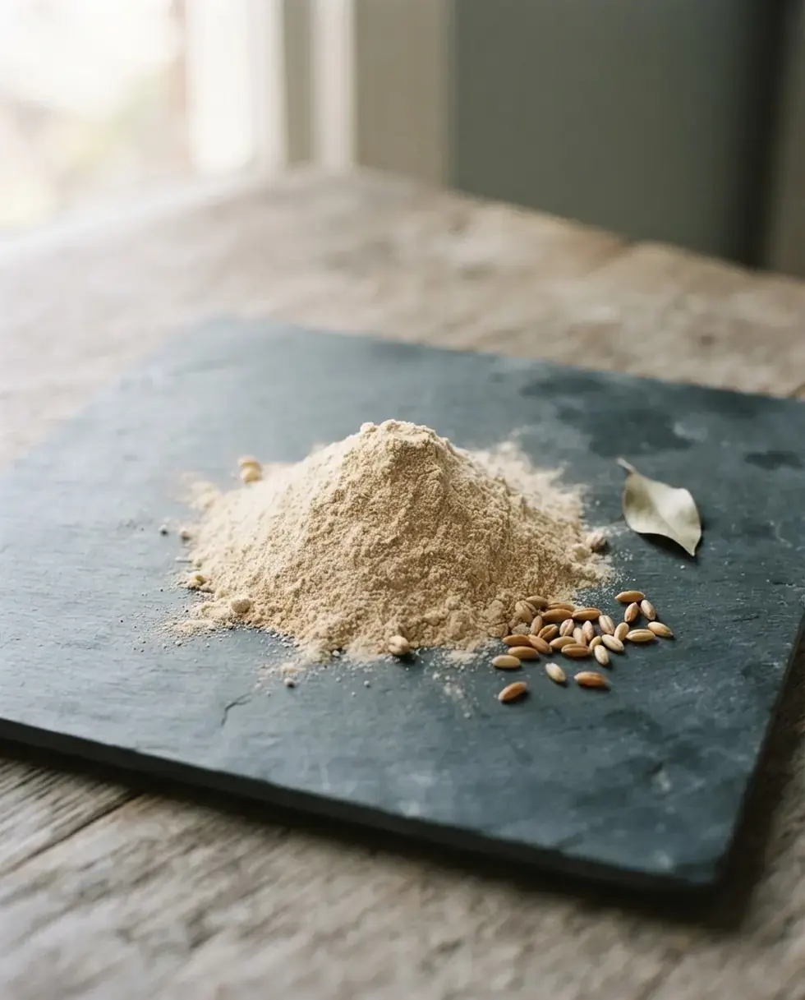
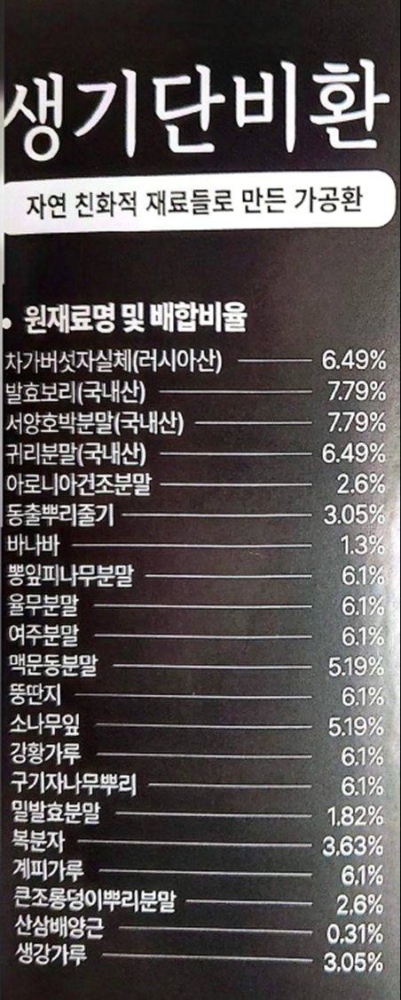

스물한 가지를,
라벨 그대로 공개합니다.
원료 이름과 배합비를 포장 라벨에 인쇄된 원재료명 그대로 옮겼습니다. 한 가지도 감추지 않았습니다.
- 원료명
스물한 가지 원료의 이름을 라벨에 적힌 그대로 씁니다.
- 배합비
원료마다 들어간 비율을 소수점 둘째 자리까지 밝힙니다.
- 순서
차가버섯자실체부터 생강가루까지, 라벨의 순서를 바꾸지 않았습니다.
- 합계
스물한 가지 비율을 모두 더하면 100.00%입니다.
- 라벨
제품 정보에서 실물 라벨 사진을 직접 펼쳐 보실 수 있습니다.
원재료에는 밀발효분말 1.82%도 들어 있습니다. 알레르기 유발물질은 제품 정보 표에서 확인하실 수 있습니다.

스물한 가지,
하나하나 보여드립니다.
칸의 크기가 곧 배합비입니다. 칸을 누르면 원료를 자세히 볼 수 있습니다.
라벨에 적힌 배합비 그대로이며 합계는 100.00%입니다. 원료 사진은 원료 모습을 바탕으로 만든 연출 이미지입니다.
스물한 가지 원료에,
마음을 담았습니다.
명절, 생신, 감사의 인사. 마음을 전하고 싶은 자리에 꺼내는 상자입니다.
생기단비환을 함께 알릴
파트너를 찾습니다.
원료를 설명할 수 있는 사람이 필요합니다. 설명서와 리플렛, 원료 샘플, 교육까지 저희가 준비합니다.
같이 드리는 자료
- 제품 설명서: 원료 21종과 배합비
- 3단 접지 리플렛: 매장·상담용
- 원료 샘플: 손에 쥐고 보여줄 수 있는 실물
교육 지원
처음 시작하는 분을 위해 제품과 원료를 2시간에 걸쳐 설명해 드립니다.
교육 수료 명찰
교육을 마치면 명찰을 드립니다. 매장에서 원료를 설명하실 때 달 수 있습니다.
이런 분을 찾습니다
- 지역 대리점
- 방문판매, 방문 상담
- 법인, 명절 선물
공급 문의. 공급가와 지역 운영 방식은 상담 시 안내드립니다.
02-483-3747제품 정보
누가, 어디서 만드는지까지 밝힙니다. 경기 남양주, DAMO F&B가 만듭니다. 아래 정보는 제품 라벨에 인쇄된 내용과 동일합니다.
- 제품명
- 생기단비환 — 자연 친화적 재료들로 만든 가공환
- 식품 유형
- 기타가공품
- 내용량
- 150g (5g × 30포), 15일분
- 구성
- 환 30포 + 산양산삼 20ml (별도 구성품)
- 원재료
- 21종, 배합비 합계 100.00%
- 알레르기 유발물질
- 밀 함유(밀발효분말)
- 섭취방법
- 1일 2회, 1회 1포
- 보관방법
- 직사광선·고온다습을 피하여 실온 보관
- 포장재질
- 폴리에틸렌(PE/내면)
- 제조원
- DAMO F&B Inc., 경기 남양주시 와부읍 석실로율석길 108-5
- 판매원
- 유경, 서울 강동구 양재대로 1319
라벨 원본 보기

원재료명 및 배합비율
21종, 라벨 기재 순서
합계100.00%
본 제품은 식품입니다. 질병의 예방 및 치료를 위한 의약품이 아닙니다. 라벨 원재료에 밀발효분말 1.82%가 포함되어 있습니다. 원료 사진은 원료 모습을 바탕으로 만든 연출 이미지입니다.
고르기 전에,
3분만.
궁금한 건 전화 한 통이면 바로 답해 드립니다. 구성과 섭취 방법부터 확인하세요.
02-483-3747